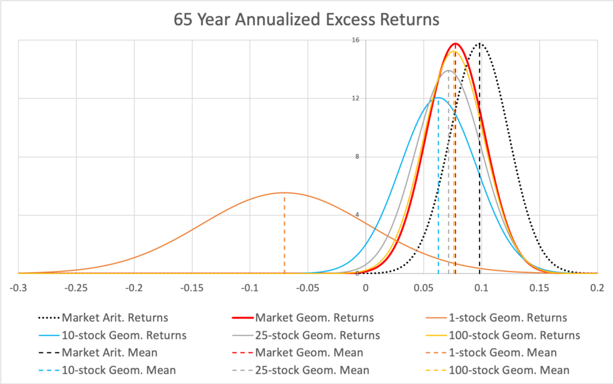

2 Ergodicity
Almost everyone responded to my question about the rationality of expected utility by talking about rationality and utility. But it’s the “expected” part that is the problem. Why would I only care about the mean? (Russel Roberts (Tweet))
EE doesn’t necessarily reject EUT; it offers one interpretation of EUT which is particularly useful and makes strong prediction. You can think of EE as an axiomatization of 19th-century EUT, an alternative axiomatization to von Neumann’s.
2.1 Almost surely
Over the very long-term, an individual will tend to get around half heads and half tails. As the number of flips goes to infinite, the proportion of heads or tails “almost surely” converges to 0.5.
This means that each person will tend to get a 50% increase half the time (or 1.5 times the initial wealth), and a 40% decrease half the time (60% of the initial wealth). A bit of maths and the time average growth in wealth for an individual is (1.5*0.6)0.5 ~ 0.95, or approximately a 5% decline in wealth each period. Every individual’s wealth will tend to decay at that rate.
To get an intuition for this, a long run of equal numbers of heads and tails is equivalent to flipping a head and a tail every two periods. Suppose that is exactly what you did – flipped a heads and then flipped a tail. Your wealth would increase to $150 in the first round ($1001.5), and then decline to $90 in the second ($1500.6). You get the same result if you change the order. Effectively, you are losing 10% (or getting only 1.5*0.6=0.9) of your money every two periods.
A system where the time average converges to the ensemble average (our population mean) is known as an ergodic system. The system of gambles above is non-ergodic as the time average and the ensemble average diverge. And given we cannot individually experience the ensemble average, we should not be misled by it. The focus on ensemble averages, as is typically done in economics, can be misleading if the system is non-ergodic.
While the population as an aggregate experiences outcomes reflecting the positive expected value of the bet, the typical person does not. The increase in wealth across the aggregate population is only due to the extreme wealth of a few lucky people.
2.2 Cooperation
Peters
This innocuous-looking gamble is a powerful tool, a window affording us a rather different view of economics, ecology, evolution, and complexity science.
(Simulator in post)
This coin toss is taunting us — it has that wonderful expected value, increasing exponentially, and yet when we play it, we’re bound to lose. Isn’t there some trick we can apply? Some way of harvesting something of those great expectations, carrying over the promise from the statistical ensemble into the individual trajectory?
The answer is yes — and that’s one reason why ergodicity economics has become such a hot topic. There’s a very simple cooperation protocol which allows us to benefit from the coin toss. Here it is: find a partner, independently play one round each, then pool your wealth and split it evenly. Then play the next round independently.
With the parameters of the gamble, pairing up in this way leads to a time-average growth rate of the wealth of the cooperating pair of -0.2% per round, compared to -5% per round for the individual player — the cooperators outperform the non-cooperators exponentially and almost break even. With one extra cooperator applying the same protocol — play independently, pool wealth, share equally — the gambling gang moves into positive territory. The time-average growth rate of the cooperating triumvirate is +1.5% per round. In this simple game, Gibran is very literally — mathematically — right: the solitary entity decays, dies with certainty. A few entities who have learned to give, on the other hand, may live.
The cooperating gamblers are not doing anything new, in a sense. They’re still just gambling, they haven’t developed any special skills, they can’t predict how the coin will land. All they’ve learned is to share, and just that allows them exponentially to outperform their non-cooperating peers (or former selves).
We can keep growing the group, and in the limit of infinitely many cooperators, wealth grows at the growth rate of the expected value.
By focusing on expected value, mainstream economics focuses on an object which grows as fast as the wealth of an infinite cooperative.
The most skilled can still do better by joining a less skilled collective, and we see mathematically how important it is to maintain diversity and avoid loss of identity in a cooperating group.
Athena Aktipis and her coworkers have studied attitudes and moral codes concerning cooperation in different societies, for instance among Maasai pastoralists in East Africa. Their work indicates that where survival is key, more generous systems of mutual aid emerge. Generosity may be thought of as a spectrum reaching from the individual coin toss, where no aid is ever received or provided, to cooperative coin tossing where “aid” is provided at every step whether it’s needed or not. In between lie different forms, where records may be kept to ensure future repayment of aid, or where the severity of need determines the degree of aid provided, with no expectation of repayment.
The coin toss says: where unintended consequences can be avoided, the more sharing takes place the faster we will make progress. The optimal level of cooperation appears not as the minimum required to avoid disaster. It is instead the maximum we can get away with without triggering unintended consequences.
Peters (2023) For to withhold is to perish
Markuu Kurti - comment to Peters
Diversification is a negative price lunch April 1, 2023
We will see how the diversification assessment framework provided by conventional finance theory is not applicable to what long-term investors really care about – compounded returns. As long-term investors care about geometric (instead of arithmetic) expected return, we will find that diversifiable risk is not only uncompensated but costly. As a consequence, diversification is not only free, but negative price lunch. What are the implications of all this? Let’s have a look. Arithmetic single period vs. Geometric compounded returns
2.3 Kelly Criterion
The only way for someone to maintain their wealth would be to bet a smaller portion of their wealth, or to diversify their wealth across multiple bets.
The Kelly criterion gives the bet size that would maximise the geometric growth rate in wealth.
\[f = \frac{bp-q}{b} = \frac{p(b+1)-1}{b}\]
f is the fraction of the current bankroll to wager
b is the net odds received on the wager (i.e. you receive $b back on top of the $1 wagered for the bet)
p is the probability of winning
q is the probability of losing (1-p)
The Kelly criterion is effectively maximising the expected log utility of the bet through setting the size of the bet. The Kelly criterion will result in someone wanting to take a share of any bet with positive expected value.
An alternative more general formula for the Kelly criterion that can be used for investment decisions is:
\[f = \frac{p}{a} - \frac{q}{b}\]
f is the fraction of the current bankroll to invest
b is the value by which your investment increases (i.e. you receive $b back on top of each $1 you invested)
a is the value by which your investment decreases if you lose (the first formula above assumes a=1)
p is the probability of winning
q is the probability of losing (1-p)
(More on Evolving Preferences)
2.4 Diversification
Kurtti
The diversification assessment framework provided by conventional finance theory is not applicable to what long-term investors really care about – compounded returns. As long-term investors care about geometric (instead of arithmetic) expected return, diversifiable risk is not only uncompensated but costly. As a consequence, diversification is not only free, but negative price lunch.
But there is a cost: if you want to enjoy the benefits of compounding, you need to pay volatility tax (also called variance drag). Variance drag means that your average annualized geometric (compounded) return is lower than your average annualized arithmetic (single period) return. Annualized volatilities of these two types of returns are approximately equal (when measured from returns with short enough time interval; like daily or monthly returns).
With compounding over time (e.g. a stock portfolio with dividends reinvested), annualized return distribution converges towards geometric expected return. Compounding introduces skewness and will break the symmetry of the return distribution.

he effect of variance drag is shown in the figure where the geometric mean excess return of a fully diversified portfolio is lower than arithmetic mean excess return (due to systematic variance drag) and the geometric mean excess returns of less than perfectly diversified portfolios are lower (due to idiosyncratic variance drag) compared to fully diversified portfolio.
The figure vividly demonstrates that idiosyncratic (firm specific, diversifiable) variance is not only uncompensated but costly. The cost is lower expected portfolio growth rate (geometric rate of return). Diversification, by lowering the cost, increases the expected annualized geometric return. Simultaneously (similarly as with arithmetic returns), diversification reduces risk (annualized standard deviation of geometric returns).
In other words, diversification is not only free but negative price lunch. Geometric expected return and therefore also geometric risk premium (expected geometric return in excess of riskless rate) decreases as volatility increases.
Geometric risk premium is arithmetic risk premium minus two variance drags: 1) systematic (undiversifiable) variance drag and 2) idiosyncratic (diversifiable, firm specific) variance drag. The latter drag explains why diversification, which decreases idiosyncratic variance, increases geometric risk premium.
It is worth noting that variance drag scales as a square of investment fraction emphasizing the importance of stock allocation and leverage. Diversification clearly is the more important the higher your stock allocation and especially if you leverage your stock exposure.
Note also that all of the formulas assume continuously compounded geometric returns (i.e. logarithmic returns: ln(1 + arithmetic return)). Also, all of the shown empirical results (like geometric risk premiums) use continuously compounded returns.
Sometimes you hear that diversification is important because there are some rare super stocks with very high long-term returns and missing those will cause you to lose to benchmark index. It is true that such super stocks exist, but the existence of super stocks is a consequence, not a cause. The mathematical root cause why super stocks exist is idiosyncratic variance. We can select our portfolio once and keep it unchanged (apart from rebalancing) for a long time or we can re-select our portfolio every month to randomize the super stock exposure over time, and the resulting return distributions will be very similar. Idiosyncratic variance causes both the existence of the super stocks and the total failures. By diversifying we mitigate idiosyncratic variance which is to say we mitigate the effect of both (losing and winning) tails of the return distribution. Simultaneously we increase our geometric expected return by mitigating idiosyncratic variance regardless of whether our portfolio includes super stocks or not.
The conventional way to estimate forward looking expected geometric returns by extrapolating realized long-term market return without taking diversification premium differences into account is simply wrong.
Small/micro-caps may be more inefficiently priced, but the flip side is that they come with much higher idiosyncratic variance i.e. much higher variance drag. There is no free lunch in harvesting returns in less efficiently priced pool of smaller firms as you need more stock picking skill diluting diversification to overcome the idiosyncratic variance disadvantage compared to big stocks.
Conventional wisdom has it that diversification does not help when it is the most needed because correlations rise and systematic volatility peaks at crisis. But diversification was never supposed to help mitigate systematic variance. If it did, we would not have risk premium. We diversify to reduce idiosyncratic variance and, based on history, idiosyncratic variance (diversification benefit) is at its highest during severe bear markets.
We can decompose geometric risk premium to geometric risk premium of a single stock and diversification premium. Geometric risk premium of a single stock explains market volatility. Unlike geometric risk premium, diversification premium is always positive and, compared to risk premium, very consistent over time.
Historical geometric equity risk premium before modern financial technology is a highly theoretical construct which was never practically achievable to investors. (Same applies to size premium). If we deduct the historical idiosyncratic variance drag, trading costs and other frictions from the historical risk premium (or size premium) and account for reduced risk, we end up with a much smaller number. This is one piece to equity risk premium puzzle.